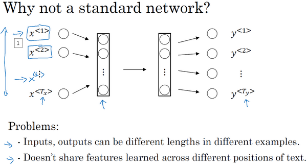
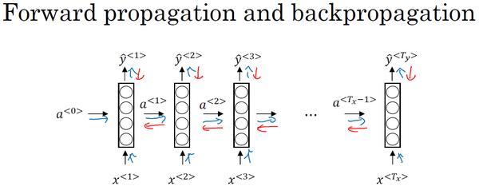
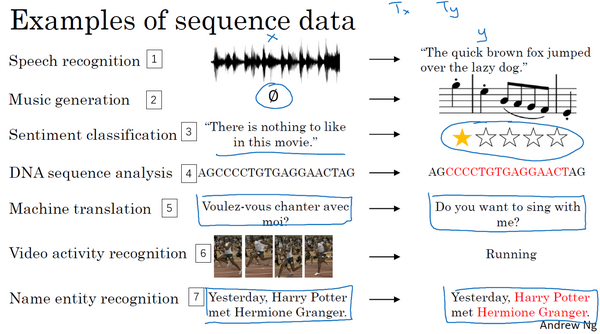
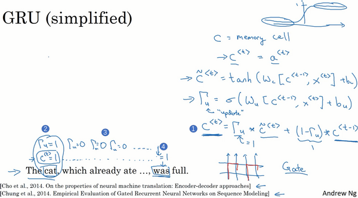
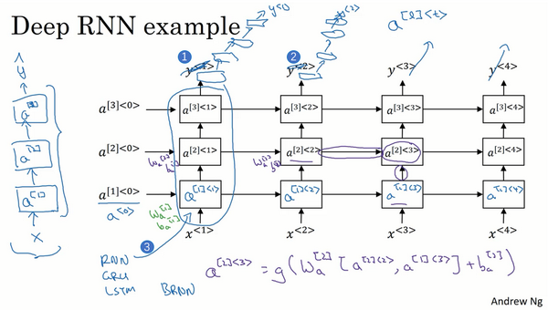

第五门课 序列模型(Sequence Models)¶
第一周 循环序列模型（Recurrent Neural Networks）¶
- 第五门课 序列模型(Sequence Models)
- 第一周 循环序列模型（Recurrent Neural Networks）
- 1.1 为什么选择序列模型？（Why Sequence Models?）
- 1.2 数学符号（Notation）
- 1.3 循环神经网络模型（Recurrent Neural Network Model）
- 1.4 通过时间的反向传播（Backpropagation through time）
- 1.5 不同类型的循环神经网络（Different types of RNNs）
- 1.6 语言模型和序列生成（Language model and sequence generation）
- 1.7 对新序列采样（Sampling novel sequences）
- 1.8 循环神经网络的梯度消失（Vanishing gradients with RNNs）
- 1.9 GRU单元（Gated Recurrent Unit（GRU））
- 1.10 长短期记忆（LSTM（long short term memory）unit）
- 1.11 双向循环神经网络（Bidirectional RNN）
- 1.12 深层循环神经网络（Deep RNNs）
- 第一周 循环序列模型（Recurrent Neural Networks）
1.1 为什么选择序列模型？（Why Sequence Models?）¶
在本课程中你将学会序列模型，它是深度学习中最令人激动的内容之一。循环神经网络（RNN）之类的模型在语音识别、自然语言处理和其他领域中引起变革。在本节课中，你将学会如何自行创建这些模型。我们先看一些例子，这些例子都有效使用了序列模型。

在进行语音识别时，给定了一个输入音频片段 \(X\)，并要求输出对应的文字记录 \(Y\)。这个例子里输入和输出数据都是序列模型，因为 \(X\)是一个按时播放的音频片段，输出 \(Y\)是一系列单词。所以之后将要学到的一些序列模型，如循环神经网络等等在语音识别方面是非常有用的。
音乐生成问题是使用序列数据的另一个例子，在这个例子中，只有输出数据 \(Y\)是序列，而输入数据可以是空集，也可以是个单一的整数，这个数可能指代你想要生成的音乐风格，也可能是你想要生成的那首曲子的头几个音符。输入的 \(X\)可以是空的，或者就是个数字，然后输出序列 \(Y\)。
在处理情感分类时，输入数据 \(X\)是序列，你会得到类似这样的输入：“There is nothing to like in this movie.”，你认为这句评论对应几星？
系列模型在DNA序列分析中也十分有用，你的DNA可以用A、C、G、T四个字母来表示。所以给定一段DNA序列，你能够标记出哪部分是匹配某种蛋白质的吗？
在机器翻译过程中，你会得到这样的输入句：“Voulez-vou chante avecmoi?”（法语：要和我一起唱么？），然后要求你输出另一种语言的翻译结果。
在进行视频行为识别时，你可能会得到一系列视频帧，然后要求你识别其中的行为。
在进行命名实体识别时，可能会给定一个句子要你识别出句中的人名。
所以这些问题都可以被称作使用标签数据 \((X,Y)\)作为训练集的监督学习。但从这一系列例子中你可以看出序列问题有很多不同类型。有些问题里，输入数据 \(X\)和输出数据\(Y\)都是序列，但就算在那种情况下，\(X\)和\(Y\)有时也会不一样长。或者像上图编号1所示和上图编号2的\(X\)和\(Y\)有相同的数据长度。在另一些问题里，只有 \(X\)或者只有\(Y\)是序列。
所以在本节我们学到适用于不同情况的序列模型。
下节中我们会定义一些定义序列问题要用到的符号。
1.2 数学符号（Notation）¶
本节先从定义符号开始一步步构建序列模型。
比如说你想要建立一个序列模型，它的输入语句是这样的：“Harry Potter and Herminoe Granger invented a new spell.”，(这些人名都是出自于J.K.Rowling笔下的系列小说Harry Potter)。假如你想要建立一个能够自动识别句中人名位置的序列模型，那么这就是一个命名实体识别问题，这常用于搜索引擎，比如说索引过去24小时内所有新闻报道提及的人名，用这种方式就能够恰当地进行索引。命名实体识别系统可以用来查找不同类型的文本中的人名、公司名、时间、地点、国家名和货币名等等。

现在给定这样的输入数据\(x\)，假如你想要一个序列模型输出\(y\)，使得输入的每个单词都对应一个输出值，同时这个\(y\)能够表明输入的单词是否是人名的一部分。技术上来说这也许不是最好的输出形式，还有更加复杂的输出形式，它不仅能够表明输入词是否是人名的一部分，它还能够告诉你这个人名在这个句子里从哪里开始到哪里结束。比如Harry Potter（上图编号1所示）、Hermione Granger（上图标号2所示）。
更简单的那种输出形式:
这个输入数据是9个单词组成的序列，所以最终我们会有9个特征集和来表示这9个单词，并按序列中的位置进行索引，\(x^{<1>}\)、\(x^{<2>}\)、\(x^{<3>}\)等等一直到\(x^{<9>}\)来索引不同的位置，我将用\(x^{<t>}\)来索引这个序列的中间位置。\(t\)意味着它们是时序序列，但不论是否是时序序列，我们都将用\(t\)来索引序列中的位置。
输出数据也是一样，我们还是用\(y^{<1>}\)、\(y^{<2>}\)、\(y^{<3>}\)等等一直到\(y^{<9>}\)来表示输出数据。同时我们用\(T_{x}\)来表示输入序列的长度，这个例子中输入是9个单词，所以\(T_{x}= 9\)。我们用\(T_{y}\)来表示输出序列的长度。在这个例子里\(T_{x} =T_{y}\)，上个视频里你知道\(T_{x}\)和\(T_{y}\)可以有不同的值。
你应该记得我们之前用的符号，我们用\(x^{(i)}\)来表示第\(i\)个训练样本，所以为了指代第\(t\)个元素，或者说是训练样本i的序列中第\(t\)个元素用\(x^{\left(i \right) <t>}\)这个符号来表示。如果\(T_{x}\)是序列长度，那么你的训练集里不同的训练样本就会有不同的长度，所以\(T_{x}^{(i)}\)就代表第\(i\)个训练样本的输入序列长度。同样\(y^{\left( i \right) < t>}\)代表第\(i\)个训练样本中第\(t\)个元素，\(T_{y}^{(i)}\)就是第\(i\)个训练样本的输出序列的长度。
所以在这个例子中，\(T_{x}^{(i)}=9\)，但如果另一个样本是由15个单词组成的句子，那么对于这个训练样本，\(T_{x}^{(i)}=15\)。
既然我们这个例子是NLP，也就是自然语言处理，这是我们初次涉足自然语言处理，一件我们需要事先决定的事是怎样表示一个序列里单独的单词，你会怎样表示像Harry这样的单词，\(x^{<1>}\)实际应该是什么？
接下来我们讨论一下怎样表示一个句子里单个的词。想要表示一个句子里的单词，第一件事是做一张词表，有时也称为词典，意思是列一列你的表示方法中用到的单词。这个词表（下图所示）中的第一个词是a，也就是说词典中的第一个单词是a，第二个单词是Aaron，然后更下面一些是单词and，再后面你会找到Harry，然后找到Potter，这样一直到最后，词典里最后一个单词可能是Zulu。

因此a是第一个单词，Aaron是第二个单词，在这个词典里，and出现在367这个位置上，Harry是在4075这个位置，Potter在6830，词典里的最后一个单词Zulu可能是第10,000个单词。所以在这个例子中我用了10,000个单词大小的词典，这对现代自然语言处理应用来说太小了。对于商业应用来说，或者对于一般规模的商业应用来说30,000到50,000词大小的词典比较常见，但是100,000词的也不是没有，而且有些大型互联网公司会用百万词，甚至更大的词典。许多商业应用用的词典可能是30,000词，也可能是50,000词。不过我将用10,000词大小的词典做说明，因为这是一个很好用的整数。
如果你选定了10,000词的词典，构建这个词典的一个方法是遍历你的训练集，并且找到前10,000个常用词，你也可以去浏览一些网络词典，它能告诉你英语里最常用的10,000个单词，接下来你可以用one-hot表示法来表示词典里的每个单词。

举个例子，在这里\(x^{<1>}\)表示Harry这个单词，它就是一个第4075行是1，其余值都是0的向量（上图编号1所示），因为那是Harry在这个词典里的位置。
同样\(x^{<2>}\)是个第6830行是1，其余位置都是0的向量（上图编号2所示）。
and在词典里排第367，所以\(x^{<3>}\)就是第367行是1，其余值都是0的向量（上图编号3所示）。如果你的词典大小是10,000的话，那么这里的每个向量都是10,000维的。
因为a是字典第一个单词，\(x^{<7>}\)对应a，那么这个向量的第一个位置为1，其余位置都是0的向量（上图编号4所示）。
所以这种表示方法中，\(x^{<t>}\)指代句子里的任意词，它就是个one-hot向量，因为它只有一个值是1，其余值都是0，所以你会有9个one-hot向量来表示这个句中的9个单词，目的是用这样的表示方式表示\(X\)，用序列模型在\(X\)和目标输出\(Y\)之间学习建立一个映射。我会把它当作监督学习的问题，我确信会给定带有\((x，y)\)标签的数据。
那么还剩下最后一件事，我们将在之后的视频讨论，如果你遇到了一个不在你词表中的单词，答案就是创建一个新的标记，也就是一个叫做Unknow Word的伪造单词，用\<UNK>作为标记，来表示不在词表中的单词，我们之后会讨论更多有关这个的内容。
总结一下本节课的内容，我们描述了一套符号用来表述你的训练集里的序列数据\(x\)和\(y\)，在下节课我们开始讲述循环神经网络中如何构建\(X\)到\(Y\)的映射。
1.3 循环神经网络模型（Recurrent Neural Network Model）¶
上节视频中，你了解了我们用来定义序列学习问题的符号。现在我们讨论一下怎样才能建立一个模型，建立一个神经网络来学习\(X\)到\(Y\)的映射。
可以尝试的方法之一是使用标准神经网络，在我们之前的例子中，我们有9个输入单词。想象一下，把这9个输入单词，可能是9个one-hot向量，然后将它们输入到一个标准神经网络中，经过一些隐藏层，最终会输出9个值为0或1的项，它表明每个输入单词是否是人名的一部分。

但结果表明这个方法并不好，主要有两个问题，
一、是输入和输出数据在不同例子中可以有不同的长度，不是所有的例子都有着同样输入长度\(T_{x}\)或是同样输出长度的\(T_{y}\)。即使每个句子都有最大长度，也许你能够填充（pad）或零填充（zero pad）使每个输入语句都达到最大长度，但仍然看起来不是一个好的表达方式。
二、一个像这样单纯的神经网络结构，它并不共享从文本的不同位置上学到的特征。具体来说，如果神经网络已经学习到了在位置1出现的Harry可能是人名的一部分，那么如果Harry出现在其他位置，比如\(x^{<t>}\)时，它也能够自动识别其为人名的一部分的话，这就很棒了。这可能类似于你在卷积神经网络中看到的，你希望将部分图片里学到的内容快速推广到图片的其他部分，而我们希望对序列数据也有相似的效果。和你在卷积网络中学到的类似，用一个更好的表达方式也能够让你减少模型中参数的数量。
之前我们提到过这些（上图编号1所示的\(x^{<1>}\)……\(x^{<t>}\)……\(x^{< T_{x}>}\)）都是10,000维的one-hot向量，因此这会是十分庞大的输入层。如果总的输入大小是最大单词数乘以10,000，那么第一层的权重矩阵就会有着巨量的参数。但循环神经网络就没有上述的两个问题。
那么什么是循环神经网络呢？我们先建立一个（下图编号1所示）。如果你以从左到右的顺序读这个句子，第一个单词就是，假如说是\(x^{<1>}\)，我们要做的就是将第一个词输入一个神经网络层，我打算这样画，第一个神经网络的隐藏层，我们可以让神经网络尝试预测输出，判断这是否是人名的一部分。循环神经网络做的是，当它读到句中的第二个单词时，假设是\(x^{<2>}\)，它不是仅用\(x^{<2>}\)就预测出\({\hat{y}}^{<2>}\)，他也会输入一些来自时间步1的信息。具体而言，时间步1的激活值就会传递到时间步2。然后，在下一个时间步，循环神经网络输入了单词\(x^{<3>}\)，然后它尝试预测输出了预测结果\({\hat{y}}^{<3>}\)，等等，一直到最后一个时间步，输入了\(x^{<T_{x}>}\)，然后输出了\({\hat{y}}^{< T_{y} >}\)。至少在这个例子中\(T_{x} =T_{y}\)，同时如果\(T_{x}\)和\(T_{y}\)不相同，这个结构会需要作出一些改变。所以在每一个时间步中，循环神经网络传递一个激活值到下一个时间步中用于计算。

要开始整个流程，在零时刻需要构造一个激活值\(a^{<0>}\)，这通常是零向量。有些研究人员会随机用其他方法初始化\(a^{<0>}\)，不过使用零向量作为零时刻的伪激活值是最常见的选择，因此我们把它输入神经网络。
在一些研究论文中或是一些书中你会看到这类神经网络，用这样的图形来表示（上图编号2所示），在每一个时间步中，你输入\(x^{<t>}\)然后输出\(y^{<t>}\)。然后为了表示循环连接有时人们会像这样画个圈，表示输回网络层，有时他们会画一个黑色方块，来表示在这个黑色方块处会延迟一个时间步。我个人认为这些循环图很难理解，所以在本次课程中，我画图更倾向于使用左边这种分布画法（上图编号1所示）。不过如果你在教材中或是研究论文中看到了右边这种图表的画法（上图编号2所示），它可以在心中将这图展开成左图那样。
循环神经网络是从左向右扫描数据，同时每个时间步的参数也是共享的，所以下页幻灯片中我们会详细讲述它的一套参数，我们用\(W_{\text{ax}}\)来表示管理着从\(x^{<1>}\)到隐藏层的连接的一系列参数，每个时间步使用的都是相同的参数\(W_{\text{ax}}\)。而激活值也就是水平联系是由参数\(W_{aa}\)决定的，同时每一个时间步都使用相同的参数\(W_{aa}\)，同样的输出结果由\(W_{\text{ya}}\)决定。下图详细讲述这些参数是如何起作用。

在这个循环神经网络中，它的意思是在预测\({\hat{y}}^{< 3 >}\)时，不仅要使用\(x^{<3>}\)的信息，还要使用来自\(x^{<1>}\)和\(x^{<2>}\)的信息，因为来自\(x^{<1>}\)的信息可以通过这样的路径（上图编号1所示的路径）来帮助预测\({\hat{y}}^{<3>}\)。这个循环神经网络的一个缺点就是它只使用了这个序列中之前的信息来做出预测，尤其当预测\({\hat{y}}^{<3>}\)时，它没有用到\(x^{<4>}\)，\(x^{<5>}\)，\(x^{<6>}\)等等的信息。所以这就有一个问题，因为如果给定了这个句子，“Teddy Roosevelt was a great President.”，为了判断Teddy是否是人名的一部分，仅仅知道句中前两个词是完全不够的，还需要知道句中后部分的信息，这也是十分有用的，因为句子也可能是这样的，“Teddy bears are on sale!”。因此如果只给定前三个单词，是不可能确切地知道Teddy是否是人名的一部分，第一个例子是人名，第二个例子就不是，所以你不可能只看前三个单词就能分辨出其中的区别。
所以这样特定的神经网络结构的一个限制是它在某一时刻的预测仅使用了从序列之前的输入信息并没有使用序列中后部分的信息，我们会在之后的双向循环神经网络（BRNN）的视频中处理这个问题。但对于现在，这个更简单的单向神经网络结构就够我们来解释关键概念了，之后只要在此基础上作出修改就能同时使用序列中前面和后面的信息来预测\({\hat{y}}^{<3>}\)，不过我们会在之后的视频讲述这些内容，接下来我们具体地写出这个神经网络计算了些什么。

这里是一张清理后的神经网络示意图，和我之前提及的一样，一般开始先输入\(a^{<0>}\)，它是一个零向量。接着就是前向传播过程，先计算激活值\(a^{<1>}\)，然后再计算\(y^{<1>}\)。
\(a^{<1>} = g_{1}(W_{{aa}}a^{< 0 >} + W_{{ax}}x^{< 1 >} + b_{a})\)
\(\hat y^{< 1 >} = g_{2}(W_{{ya}}a^{< 1 >} + b_{y})\)
我将用这样的符号约定来表示这些矩阵下标，举个例子\(W_{\text{ax}}\)，第二个下标意味着\(W_{\text{ax}}\)要乘以某个\(x\)类型的量，然后第一个下标\(a\)表示它是用来计算某个\(a\)类型的变量。同样的，可以看出这里的\(W_{\text{ya}}\)乘上了某个\(a\)类型的量，用来计算出某个\(\hat {y}\)类型的量。
循环神经网络用的激活函数经常是tanh，不过有时候也会用ReLU，但是tanh是更通常的选择，我们有其他方法来避免梯度消失问题，我们将在之后进行讲述。选用哪个激活函数是取决于你的输出\(y\)，如果它是一个二分问题，那么我猜你会用sigmoid函数作为激活函数，如果是\(k\)类别分类问题的话，那么可以选用softmax作为激活函数。不过这里激活函数的类型取决于你有什么样类型的输出\(y\)，对于命名实体识别来说\(y\)只可能是0或者1，那我猜这里第二个激活函数\(g\)可以是sigmoid激活函数。
更一般的情况下，在\(t\)时刻，
\(a^{< t >} = g_{1}(W_{aa}a^{< t - 1 >} + W_{ax}x^{< t >} + b_{a})\)
\(\hat y^{< t >} = g_{2}(W_{{ya}}a^{< t >} + b_{y})\)
所以这些等式定义了神经网络的前向传播，你可以从零向量\(a^{<0>}\)开始，然后用\(a^{<0>}\)和\(x^{<1>}\)来计算出\(a^{<1>}\)和\(\hat y^{<1>}\)，然后用\(x^{<2>}\)和\(a^{<1>}\)一起算出\(a^{<2>}\)和\(\hat y^{<2>}\)等等，像图中这样，从左到右完成前向传播。
现在为了帮我们建立更复杂的神经网络，我实际要将这个符号简化一下，我在下一张幻灯片里复制了这两个等式（上图编号1所示的两个等式）。

接下来为了简化这些符号，我要将这部分（\(W_{\text{aa}}a^{<t -1>} +W_{\text{ax}}x^{<t>}\)）（上图编号1所示）以更简单的形式写出来，我把它写做\(a^{<t>} =g(W_{a}\left\lbrack a^{< t-1 >},x^{<t>} \right\rbrack +b_{a})\)（上图编号2所示），那么左右两边划线部分应该是等价的。所以我们定义\(W_{a}\)的方式是将矩阵\(W_{aa}\)和矩阵\(W_{{ax}}\)水平并列放置，\([ {{W}_{aa}}\vdots {{W}_{ax}}]=W_{a}\)（上图编号3所示）。举个例子，如果\(a\)是100维的，然后延续之前的例子，\(x\)是10,000维的，那么\(W_{aa}\)就是个\(（100，100）\)维的矩阵，\(W_{ax}\)就是个\(（100，10,000）\)维的矩阵，因此如果将这两个矩阵堆起来，\(W_{a}\)就会是个\(（100，10,100）\)维的矩阵。
用这个符号（\(\left\lbrack a^{< t - 1 >},x^{< t >}\right\rbrack\)）的意思是将这两个向量堆在一起，我会用这个符号表示，即\(\begin{bmatrix}a^{< t-1 >} \\ x^{< t >} \\\end{bmatrix}\)（上图编号4所示），最终这就是个10,100维的向量。你可以自己检查一下，用这个矩阵乘以这个向量，刚好能够得到原来的量，因为此时，矩阵\([ {{W}_{aa}}\vdots {{W}_{ax}}]\)乘以\(\begin{bmatrix} a^{< t - 1 >} \\ x^{< t >} \\ \end{bmatrix}\)，刚好等于\(W_{{aa}}a^{<t-1>} + W_{{ax}}x^{<t>}\)，刚好等于之前的这个结论（上图编号5所示）。这种记法的好处是我们可以不使用两个参数矩阵\(W_{{aa}}\)和\(W_{{ax}}\)，而是将其压缩成一个参数矩阵\(W_{a}\)，所以当我们建立更复杂模型时这就能够简化我们要用到的符号。
同样对于这个例子（\(\hat y^{<t>} = g(W_{ya}a^{<t>} +b_{y})\)），我会用更简单的方式重写，\(\hat y^{< t >} = g(W_{y}a^{< t >} +b_{y})\)（上图编号6所示）。现在\(W_{y}\)和\(b_{y}\)符号仅有一个下标，它表示在计算时会输出什么类型的量，所以\(W_{y}\)就表明它是计算\(y\)类型的量的权重矩阵，而上面的\(W_{a}\)和\(b_{a}\)则表示这些参数是用来计算\(a\)类型或者说是激活值的。
RNN前向传播示意图：

好就这么多，你现在知道了基本的循环神经网络，下节课我们会一起来讨论反向传播，以及你如何能够用RNN进行学习。
1.4 通过时间的反向传播（Backpropagation through time）¶
之前我们已经学过了循环神经网络的基础结构，在本节视频中我们将来了解反向传播是怎样在循环神经网络中运行的。和之前一样，当你在编程框架中实现循环神经网络时，编程框架通常会自动处理反向传播。但我认为，在循环神经网络中，对反向传播的运行有一个粗略的认识还是非常有用的，让我们来一探究竟。

在之前你已经见过对于前向传播（上图蓝色箭头所指方向）怎样在神经网络中从左到右地计算这些激活项，直到输出所有地预测结果。而对于反向传播，我想你已经猜到了，反向传播地计算方向（上图红色箭头所指方向）与前向传播基本上是相反的。

我们来分析一下前向传播的计算，现在你有一个输入序列，\(x^{<1>}\)，\(x^{<2>}\)，\(x^{<3>}\)一直到\(x^{< T_{x} >}\)，然后用\(x^{<1>}\)还有\(a^{<0>}\)计算出时间步1的激活项，再用\(x^{<2>}\)和\(a^{<1>}\)计算出\(a^{<2>}\)，然后计算\(a^{<3>}\)等等，一直到\(a^{< T_{x} >}\)。
为了真正计算出\(a^{<1>}\)，你还需要一些参数，\(W_{a}\)和\(b_{a}\)，用它们来计算出\(a^{<1>}\)。这些参数在之后的每一个时间步都会被用到，于是继续用这些参数计算\(a^{<2>}\)，\(a^{<3>}\)等等，所有的这些激活项都要取决于参数\(W_{a}\)和\(b_{a}\)。有了\(a^{<1>}\)，神经网络就可以计算第一个预测值\(\hat y^{<1>}\)，接着到下一个时间步，继续计算出\(\hat y^{<2>}\)，\(\hat y^{<3>}\)，等等，一直到\(\hat y^{<T_{y}>}\)。为了计算出\({\hat{y}}\)，需要参数\(W_{y}\)和\(b_{y}\)，它们将被用于所有这些节点。

然后为了计算反向传播，你还需要一个损失函数。我们先定义一个元素损失函数（上图编号1所示）
\(L^{<t>}( \hat y^{<t>},y^{<t>}) = - y^{<t>}\log\hat y^{<t>}-( 1- y^{<t>})log(1-\hat y^{<t>})\)
它对应的是序列中一个具体的词，如果它是某个人的名字，那么\(y^{<t>}\)的值就是1，然后神经网络将输出这个词是名字的概率值，比如0.1。我将它定义为标准逻辑回归损失函数，也叫交叉熵损失函数（Cross Entropy Loss），它和之前我们在二分类问题中看到的公式很像。所以这是关于单个位置上或者说某个时间步\(t\)上某个单词的预测值的损失函数。
现在我们来定义整个序列的损失函数，将\(L\)定义为（上图编号2所示）
\(L(\hat y,y) = \ \sum_{t = 1}^{T_{x}}{L^{< t >}(\hat y^{< t >},y^{< t >})}\)
在这个计算图中，通过\(\hat y^{<1>}\)可以计算对应的损失函数，于是计算出第一个时间步的损失函数（上图编号3所示），然后计算出第二个时间步的损失函数，然后是第三个时间步，一直到最后一个时间步，最后为了计算出总体损失函数，我们要把它们都加起来，通过下面的等式（上图编号2所示的等式）计算出最后的\(L\)（上图编号4所示），也就是把每个单独时间步的损失函数都加起来。
这就是完整的计算图，在之前的例子中，你已经见过反向传播，所以你应该能够想得到反向传播算法需要在相反的方向上进行计算和传递信息，最终你做的就是把前向传播的箭头都反过来，在这之后你就可以计算出所有合适的量，然后你就可以通过导数相关的参数，用梯度下降法来更新参数。
在这个反向传播的过程中，最重要的信息传递或者说最重要的递归运算就是这个从右到左的运算，这也就是为什么这个算法有一个很别致的名字，叫做“通过（穿越）时间反向传播（backpropagation through time）”。取这个名字的原因是对于前向传播，你需要从左到右进行计算，在这个过程中，时刻\(t\)不断增加。而对于反向传播，你需要从右到左进行计算，就像时间倒流。“通过时间反向传播”，就像穿越时光，这种说法听起来就像是你需要一台时光机来实现这个算法一样。
RNN反向传播示意图：

希望你大致了解了前向和反向传播是如何在RNN中工作的，到目前为止，你只见到了RNN中一个主要的例子，其中输入序列的长度和输出序列的长度是一样的。在下节课将展示更多的RNN架构，这将让你能够处理一些更广泛的应用。
1.5 不同类型的循环神经网络（Different types of RNNs）¶
现在你已经了解了一种RNN结构，它的输入量\(T_{x}\)等于输出数量\(T_{y}\)。事实上，对于其他一些应用，\(T_{x}\)和\(T_{y}\)并不一定相等。在这个视频里，你会看到更多的RNN的结构。

你应该还记得这周第一个视频中的那个幻灯片，那里有很多例子输入\(x\)和输出\(y\)，有各种类型，并不是所有的情况都满足\(T_{x}=T_{y}\)。
比如音乐生成这个例子，\(T_{x}\)可以是长度为1甚至为空集。再比如电影情感分类，输出\(y\)可以是1到5的整数，而输入是一个序列。在命名实体识别中，这个例子中输入长度和输出长度是一样的。
还有一些情况，输入长度和输出长度不同，他们都是序列但长度不同，比如机器翻译，一个法语句子和一个英语句子不同数量的单词却能表达同一个意思。
所以我们应该修改基本的RNN结构来处理这些问题，这个视频的内容参考了Andrej Karpathy的博客，一篇叫做《循环神经网络的非理性效果》（“The Unreasonable Effectiveness of Recurrent Neural Networks”）的文章，我们看一些例子。
你已经见过\(T_{x} = T_{y}\)的例子了（下图编号1所示），也就是我们输入序列\(x^{<1>}\)，\(x^{<2>}\)，一直到\(x^{< T_{x}>}\)，我们的循环神经网络这样工作，输入\(x^{<1>}\)来计算\(\hat y^{<1>}\)，\(\hat y^{<2>}\)等等一直到\(\hat y^{<T_{y}>}\)。在原先的图里，我会画一串圆圈表示神经元，大部分时候为了让符号更加简单，此处就以简单的小圈表示。这个就叫做“多对多”（many-to-many）的结构，因为输入序列有很多的输入，而输出序列也有很多输出。
现在我们看另外一个例子，假如说，你想处理情感分类问题（下图编号2所示），这里\(x\)可能是一段文本，比如一个电影的评论，“These is nothing to like in this movie.”（“这部电影没什么还看的。”），所以\(x\)就是一个序列，而\(y\)可能是从1到5的一个数字，或者是0或1，这代表正面评价和负面评价，而数字1到5代表电影是1星，2星，3星，4星还是5星。所以在这个例子中，我们可以简化神经网络的结构，输入\(x^{<1 >}\)，\(x^{< 2 >}\)，一次输入一个单词，如果输入文本是“These is nothing to like in this movie”，那么单词的对应如下图编号2所示。我们不再在每个时间上都有输出了，而是让这个RNN网络读入整个句子，然后在最后一个时间上得到输出，这样输入的就是整个句子，所以这个神经网络叫做“多对一”（many-to-one）结构，因为它有很多输入，很多的单词，然后输出一个数字。

为了完整性，还要补充一个“一对一”（one-to-one）的结构（上图编号3所示），这个可能没有那么重要，这就是一个小型的标准的神经网络，输入\(x\)然后得到输出\(y\)，我们这个系列课程的前两个课程已经讨论过这种类型的神经网络了。

除了“多对一”的结构，也可以有“一对多”（one-to-many）的结构。对于一个“一对多”神经网络结构的例子就是音乐生成（上图编号1所示），事实上，你会在这个课后编程练习中去实现这样的模型，你的目标是使用一个神经网络输出一些音符。对应于一段音乐，输入\(x\)可以是一个整数，表示你想要的音乐类型或者是你想要的音乐的第一个音符，并且如果你什么都不想输入，\(x\)可以是空的输入，可设为0向量。
这样这个神经网络的结构，首先是你的输入\(x\)，然后得到RNN的输出，第一个值，然后就没有输入了，再得到第二个输出，接着输出第三个值等等，一直到合成这个音乐作品的最后一个音符，这里也可以写上输入\(a^{<0>}\)（上图编号3所示）。有一个后面才会讲到的技术细节，当你生成序列时通常会把第一个合成的输出也喂给下一层（上图编号4所示），所以实际的网络结构最终就像这个样子。
我们已经讨论了“多对多”、“多对一”、“一对一”和“一对多”的结构，对于“多对多”的结构还有一个有趣的例子值得详细说一下，就是输入和输出长度不同的情况。你刚才看过的多对多的例子，它的输入长度和输出长度是完全一样的。而对于像机器翻译这样的应用，输入句子的单词的数量，比如说一个法语的句子，和输出句子的单词数量，比如翻译成英语，这两个句子的长度可能不同，所以还需要一个新的网络结构，一个不同的神经网络（上图编号2所示）。首先读入这个句子，读入这个输入，比如你要将法语翻译成英语，读完之后，这个网络就会输出翻译结果。有了这种结构\(T_{x}\)和\(T_{y}\)就可以是不同的长度了。同样，你也可以画上这个\(a^{<0>}\)。这个网络的结构有两个不同的部分，这（上图编号5所示）是一个编码器，获取输入，比如法语句子，这（上图编号6所示）是解码器，它会读取整个句子，然后输出翻译成其他语言的结果。

这就是一个“多对多”结构的例子，到这周结束的时候，你就能对这些各种各样结构的基本构件有一个很好的理解。严格来说，还有一种结构，我们会在第四周涉及到，就是“注意力”（attention based）结构，但是根据我们现在画的这些图不好理解这个模型。
总结一下这些各种各样的RNN结构，这（上图编号1所示）是“一对一”的结构，当去掉\(a^{<0>}\)时它就是一种标准类型的神经网络。还有一种“一对多”的结构（上图编号2所示），比如音乐生成或者序列生成。还有“多对一”，这（上图编号3所示）是情感分类的例子，首先读取输入，一个电影评论的文本，然后判断他们是否喜欢电影还是不喜欢。还有“多对多”的结构（上图编号4所示），命名实体识别就是“多对多”的例子，其中\(T_{x}=T_{y}\)。最后还有一种“多对多”结构的其他版本（上图编号5所示），对于像机器翻译这样的应用，\(T_{x}\)和\(T_{y}\)就可以不同了。
现在，你已经了解了大部分基本的模块，这些就是差不多所有的神经网络了，除了序列生成，有些细节的问题我们会在下节课讲解。
我希望你从本视频中了解到用这些RNN的基本模块，把它们组合在一起就可以构建各种各样的模型。但是正如我前面提到的，序列生成还有一些不一样的地方，在这周的练习里，你也会实现它，你需要构建一个语言模型，结果好的话会得到一些有趣的序列或者有意思的文本。下节课深入探讨序列生成。
1.6 语言模型和序列生成（Language model and sequence generation）¶
在自然语言处理中，构建语言模型是最基础的也是最重要的工作之一，并且能用RNN很好地实现。在本视频中，你将学习用RNN构建一个语言模型，在本周结束的时候，还会有一个很有趣的编程练习，你能在练习中构建一个语言模型，并用它来生成莎士比亚文风的文本或其他类型文本。

所以什么是语言模型呢？比如你在做一个语音识别系统，你听到一个句子，“the apple and pear（pair） salad was delicious.”，所以我究竟说了什么？我说的是 “the apple and pair salad”，还是“the apple and pear salad”？（pear和pair是近音词）。你可能觉得我说的应该更像第二种，事实上，这就是一个好的语音识别系统要帮助输出的东西，即使这两句话听起来是如此相似。而让语音识别系统去选择第二个句子的方法就是使用一个语言模型，他能计算出这两句话各自的可能性。
举个例子，一个语音识别模型可能算出第一句话的概率是\(P( \text{The apple and pair salad}) = 3.2 \times 10^{-13}\)，而第二句话的概率是\(P\left(\text{The apple and pear salad} \right) = 5.7 \times 10^{-10}\)，比较这两个概率值，显然我说的话更像是第二种，因为第二句话的概率比第一句高出1000倍以上，这就是为什么语音识别系统能够在这两句话中作出选择。
所以语言模型所做的就是，它会告诉你某个特定的句子它出现的概率是多少，根据我所说的这个概率，假设你随机拿起一张报纸，打开任意邮件，或者任意网页或者听某人说下一句话，并且这个人是你的朋友，这个你即将从世界上的某个地方得到的句子会是某个特定句子的概率是多少，例如“the apple and pear salad”。它是两种系统的基本组成部分，一个刚才所说的语音识别系统，还有机器翻译系统，它要能正确输出最接近的句子。而语言模型做的最基本工作就是输入一个句子，准确地说是一个文本序列，\(y^{<1>}\)，\(y^{<2>}\)一直到\(y^{<T_{y}>}\)。对于语言模型来说，用\(y\)来表示这些序列比用\(x\)来表示要更好，然后语言模型会估计某个句子序列中各个单词出现的可能性。
那么如何建立一个语言模型呢？为了使用RNN建立出这样的模型，你首先需要一个训练集，包含一个很大的英文文本语料库（corpus）或者其它的语言，你想用于构建模型的语言的语料库。语料库是自然语言处理的一个专有名词，意思就是很长的或者说数量众多的英文句子组成的文本。

假如说，你在训练集中得到这么一句话，“Cats average 15 hours of sleep a day.”(猫一天睡15小时)，你要做的第一件事就是将这个句子标记化，意思就是像之前视频中一样，建立一个字典，然后将每个单词都转换成对应的one-hot向量，也就是字典中的索引。可能还有一件事就是你要定义句子的结尾，一般的做法就是增加一个额外的标记，叫做EOS（上图编号1所示），它表示句子的结尾，这样能够帮助你搞清楚一个句子什么时候结束，我们之后会详细讨论这个。EOS标记可以被附加到训练集中每一个句子的结尾，如果你想要你的模型能够准确识别句子结尾的话。在本周的练习中我们不需要使用这个EOS标记，不过在某些应用中你可能会用到它，不过稍后就能见到它的用处。于是在本例中我们，如果你加了EOS标记，这句话就会有9个输入，有\(y^{<1>}\)，\(y^{<2>}\)一直到\(y^{<9>}\)。在标记化的过程中，你可以自行决定要不要把标点符号看成标记，在本例中，我们忽略了标点符号，所以我们只把day看成标志，不包括后面的句号，如果你想把句号或者其他符号也当作标志，那么你可以将句号也加入你的字典中。
现在还有一个问题如果你的训练集中有一些词并不在你的字典里，比如说你的字典有10,000个词，10,000个最常用的英语单词。现在这个句，“The Egyptian Mau is a bread of cat.”其中有一个词Mau，它可能并不是预先的那10,000个最常用的单词，在这种情况下，你可以把Mau替换成一个叫做UNK的代表未知词的标志，我们只针对UNK建立概率模型，而不是针对这个具体的词Mau。
完成标识化的过程后，这意味着输入的句子都映射到了各个标志上，或者说字典中的各个词上。下一步我们要构建一个RNN来构建这些序列的概率模型。在下一张幻灯片中会看到的一件事就是最后你会将\(x^{<t>}\)设为\(y^{<t-1>}\)。

现在我们来建立RNN模型，我们继续使用“Cats average 15 hours of sleep a day.”这个句子来作为我们的运行样例，我将会画出一个RNN结构。在第0个时间步，你要计算激活项\(a^{<1>}\)，它是以\(x^{<1 >}\)作为输入的函数，而\(x^{<1>}\)会被设为全为0的集合，也就是0向量。在之前的\(a^{<0>}\)按照惯例也设为0向量，于是\(a^{<1>}\)要做的就是它会通过softmax进行一些预测来计算出第一个词可能会是什么，其结果就是\(\hat y^{<1>}\)（上图编号1所示），这一步其实就是通过一个softmax层来预测字典中的任意单词会是第一个词的概率，比如说第一个词是\(a\)的概率有多少，第一个词是Aaron的概率有多少，第一个词是cats的概率又有多少，就这样一直到Zulu是第一个词的概率是多少，还有第一个词是UNK（未知词）的概率有多少，还有第一个词是句子结尾标志的概率有多少，表示不必阅读。所以\(\hat y^{<1>}\)的输出是softmax的计算结果，它只是预测第一个词的概率，而不去管结果是什么。在我们的例子中，最终会得到单词Cats。所以softmax层输出10,000种结果，因为你的字典中有10,000个词，或者会有10,002个结果，因为你可能加上了未知词，还有句子结尾这两个额外的标志。
然后RNN进入下个时间步，在下一时间步中，仍然使用激活项\(a^{<1>}\)，在这步要做的是计算出第二个词会是什么。现在我们依然传给它正确的第一个词，我们会告诉它第一个词就是Cats，也就是\(\hat y^{<1>}\)，告诉它第一个词就是Cats，这就是为什么\(y^{<1>} = x^{<2>}\)（上图编号2所示）。然后在第二个时间步中，输出结果同样经过softmax层进行预测，RNN的职责就是预测这些词的概率（上图编号3所示），而不会去管结果是什么，可能是b或者arron，可能是Cats或者Zulu或者UNK（未知词）或者EOS或者其他词，它只会考虑之前得到的词。所以在这种情况下，我猜正确答案会是average，因为句子确实就是Cats average开头的。
然后再进行RNN的下个时间步，现在要计算\(a^{<3>}\)。为了预测第三个词，也就是15，我们现在给它之前两个词，告诉它Cats average是句子的前两个词，所以这是下一个输入，\(x^{<3>} = y^{<2>}\)，输入average以后，现在要计算出序列中下一个词是什么，或者说计算出字典中每一个词的概率（上图编号4所示），通过之前得到的Cats和average，在这种情况下，正确结果会是15，以此类推。
一直到最后，没猜错的话，你会停在第9个时间步，然后把\(x^{<9>}\)也就是\(y^{<8>}\)传给它（上图编号5所示），也就是单词day，这里是\(a^{<9>}\)，它会输出\(y^{<9>}\)，最后的得到结果会是EOS标志，在这一步中，通过前面这些得到的单词，不管它们是什么，我们希望能预测出EOS句子结尾标志的概率会很高（上图编号6所示）。
所以RNN中的每一步都会考虑前面得到的单词，比如给它前3个单词（上图编号7所示），让它给出下个词的分布，这就是RNN如何学习从左往右地每次预测一个词。
接下来为了训练这个网络，我们要定义代价函数。于是，在某个时间步\(t\)，如果真正的词是\(y^{<t>}\)，而神经网络的softmax层预测结果值是\(y^{<t>}\)，那么这（上图编号8所示）就是softmax损失函数，\(L\left( \hat y^{<t>},y^{<t>}>\right) = - \sum_{i}^{}{y_{i}^{<t>}\log\hat y_{i}^{<t>}}\)。而总体损失函数（上图编号9所示）\(L = \sum_{t}^{}{L^{< t >}\left( \hat y^{<t>},y^{<t>} \right)}\)，也就是把所有单个预测的损失函数都相加起来。

如果你用很大的训练集来训练这个RNN，你就可以通过开头一系列单词像是Cars average 15或者Cars average 15 hours of来预测之后单词的概率。现在有一个新句子，它是\(y^{<1>}\)，\(y^{<2>}\)，\(y^{<3>}\)，为了简单起见，它只包含3个词（如上图所示），现在要计算出整个句子中各个单词的概率，方法就是第一个softmax层会告诉你\(y^{<1>}\)的概率（上图编号1所示），这也是第一个输出，然后第二个softmax层会告诉你在考虑\(y^{<1>}\)的情况下\(y^{<2>}\)的概率（上图编号2所示），然后第三个softmax层告诉你在考虑\(y^{<1>}\)和\(y^{<2>}\)的情况下\(y^{<3>}\)的概率（上图编号3所示），把这三个概率相乘，最后得到这个含3个词的整个句子的概率。
这就是用RNN训练一个语言模型的基础结构，可能我说的这些东西听起来有些抽象，不过别担心，你可以在编程练习中亲自实现这些东西。下一节课用语言模型做的一件最有趣的事就是从模型中进行采样。
1.7 对新序列采样（Sampling novel sequences）¶
在你训练一个序列模型之后，要想了解到这个模型学到了什么，一种非正式的方法就是进行一次新序列采样，来看看到底应该怎么做。
记住一个序列模型模拟了任意特定单词序列的概率，我们要做的就是对这些概率分布进行采样来生成一个新的单词序列。下图编号1所示的网络已经被上方所展示的结构训练训练过了，而为了进行采样（下图编号2所示的网络），你要做一些截然不同的事情。

第一步要做的就是对你想要模型生成的第一个词进行采样，于是你输入\(x^{<1>} =0\)，\(a^{<0>} =0\)，现在你的第一个时间步得到的是所有可能的输出是经过softmax层后得到的概率，然后根据这个softmax的分布进行随机采样。Softmax分布给你的信息就是第一个词a的概率是多少，第一个词是aaron的概率是多少，第一个词是zulu的概率是多少，还有第一个词是UNK（未知标识）的概率是多少，这个标识可能代表句子的结尾，然后对这个向量使用例如numpy命令，np.random.choice（上图编号3所示），来根据向量中这些概率的分布进行采样，这样就能对第一个词进行采样了。
然后继续下一个时间步，记住第二个时间步需要\(\hat y^{<1>}\)作为输入，而现在要做的是把刚刚采样得到的\(\hat y^{<1>}\)放到\(a^{<2>}\)（上图编号4所示），作为下一个时间步的输入，所以不管你在第一个时间步得到的是什么词，都要把它传递到下一个位置作为输入，然后softmax层就会预测\(\hat y^{<2>}\)是什么。举个例子，假如说对第一个词进行抽样后，得到的是The，The作为第一个词的情况很常见，然后把The当成\(x^{<2>}\)，现在\(x^{<2>}\)就是\(\hat y^{<1>}\)，现在你要计算出在第一词是The的情况下，第二个词应该是什么（上图编号5所示），然后得到的结果就是\(\hat y^{<2>}\)，然后再次用这个采样函数来对\(\hat y^{<2>}\)进行采样。
然后再到下一个时间步，无论你得到什么样的用one-hot码表示的选择结果，都把它传递到下一个时间步，然后对第三个词进行采样。不管得到什么都把它传递下去，一直这样直到最后一个时间步。
那么你要怎样知道一个句子结束了呢？方法之一就是，如果代表句子结尾的标识在你的字典中，你可以一直进行采样直到得到EOS标识（上图编号6所示），这代表着已经抵达结尾，可以停止采样了。另一种情况是，如果你的字典中没有这个词，你可以决定从20个或100个或其他个单词进行采样，然后一直将采样进行下去直到达到所设定的时间步。不过这种过程有时候会产生一些未知标识（上图编号7所示），如果你要确保你的算法不会输出这种标识，你能做的一件事就是拒绝采样过程中产生任何未知的标识，一旦出现就继续在剩下的词中进行重采样，直到得到一个不是未知标识的词。如果你不介意有未知标识产生的话，你也可以完全不管它们。
这就是你如何从你的RNN语言模型中生成一个随机选择的句子。直到现在我们所建立的是基于词汇的RNN模型，意思就是字典中的词都是英语单词（下图编号1所示）。

根据你实际的应用，你还可以构建一个基于字符的RNN结构，在这种情况下，你的字典仅包含从a到z的字母，可能还会有空格符，如果你需要的话，还可以有数字0到9，如果你想区分字母大小写，你可以再加上大写的字母，你还可以实际地看一看训练集中可能会出现的字符，然后用这些字符组成你的字典（上图编号2所示）。
如果你建立一个基于字符的语言模型，比起基于词汇的语言模型，你的序列\(\hat y^{<1>}\)，\(\hat y^{<2>}\)，\(\hat y^{<3>}\)在你的训练数据中将会是单独的字符，而不是单独的词汇。所以对于前面的例子来说，那个句子（上图编号3所示），“Cats average 15 hours of sleep a day.”，在该例中C就是\(\hat y^{<1>}\)，a就是\(\hat y^{<2>}\)，t就是\(\hat y^{<3>}\)，空格符就是\(\hat y^{<4>}\)等等。
使用基于字符的语言模型有有点也有缺点，优点就是你不必担心会出现未知的标识，例如基于字符的语言模型会将Mau这样的序列也视为可能性非零的序列。而对于基于词汇的语言模型，如果Mau不在字典中，你只能把它当作未知标识UNK。不过基于字符的语言模型一个主要缺点就是你最后会得到太多太长的序列，大多数英语句子只有10到20个的单词，但却可能包含很多很多字符。所以基于字符的语言模型在捕捉句子中的依赖关系也就是句子较前部分如何影响较后部分不如基于词汇的语言模型那样可以捕捉长范围的关系，并且基于字符的语言模型训练起来计算成本比较高昂。所以我见到的自然语言处理的趋势就是，绝大多数都是使用基于词汇的语言模型，但随着计算机性能越来越高，会有更多的应用。在一些特殊情况下，会开始使用基于字符的模型。但是这确实需要更昂贵的计算力来训练，所以现在并没有得到广泛地使用，除了一些比较专门需要处理大量未知的文本或者未知词汇的应用，还有一些要面对很多专有词汇的应用。
在现有的方法下，现在你可以构建一个RNN结构，看一看英文文本的语料库，然后建立一个基于词汇的或者基于字符的语言模型，然后从训练的语言模型中进行采样。

这里有一些样本，它们是从一个语言模型中采样得到的，准确来说是基于字符的语言模型，你可以在编程练习中自己实现这样的模型。如果模型是用新闻文章训练的，它就会生成左边这样的文本，这有点像一篇不太合乎语法的新闻文本，不过听起来，这句“Concussion epidemic”，to be examined，确实有点像新闻报道。用莎士比亚的文章训练后生成了右边这篇东西，听起来很像是莎士比亚写的东西：
“The mortal moon hath her eclipse in love.
And subject of this thou art another this fold.
When besser be my love to me see sabl's.
For whose are ruse of mine eyes heaves.”
这些就是基础的RNN结构和如何去建立一个语言模型并使用它，对于训练出的语言模型进行采样。在之后的视频中，我想探讨在训练RNN时一些更加深入的挑战以及如何适应这些挑战，特别是梯度消失问题来建立更加强大的RNN模型。下节课，我们将谈到梯度消失并且会开始谈到GRU，也就是门控循环单元和LSTM长期记忆网络模型。
1.8 循环神经网络的梯度消失（Vanishing gradients with RNNs）¶
你已经了解了RNN时如何工作的了，并且知道如何应用到具体问题上，比如命名实体识别，比如语言模型，你也看到了怎么把反向传播用于RNN。其实，基本的RNN算法还有一个很大的问题，就是梯度消失的问题。这节课我们会讨论，在下几节课我们会讨论一些方法用来解决这个问题。

你已经知道了RNN的样子，现在我们举个语言模型的例子，假如看到这个句子（上图编号1所示），“The cat, which already ate ……, was full.”，前后应该保持一致，因为cat是单数，所以应该用was。“The cats, which ate ……, were full.”（上图编号2所示），cats是复数，所以用were。这个例子中的句子有长期的依赖，最前面的单词对句子后面的单词有影响。但是我们目前见到的基本的RNN模型（上图编号3所示的网络模型），不擅长捕获这种长期依赖效应，解释一下为什么。
你应该还记得之前讨论的训练很深的网络，我们讨论了梯度消失的问题。比如说一个很深很深的网络（上图编号4所示），100层，甚至更深，对这个网络从左到右做前向传播然后再反向传播。我们知道如果这是个很深的神经网络，从输出\(\hat y\)得到的梯度很难传播回去，很难影响靠前层的权重，很难影响前面层（编号5所示的层）的计算。
对于有同样问题的RNN，首先从左到右前向传播，然后反向传播。但是反向传播会很困难，因为同样的梯度消失的问题，后面层的输出误差（上图编号6所示）很难影响前面层（上图编号7所示的层）的计算。这就意味着，实际上很难让一个神经网络能够意识到它要记住看到的是单数名词还是复数名词，然后在序列后面生成依赖单复数形式的was或者were。而且在英语里面，这中间的内容（上图编号8所示）可以任意长，对吧？所以你需要长时间记住单词是单数还是复数，这样后面的句子才能用到这些信息。也正是这个原因，所以基本的RNN模型会有很多局部影响，意味着这个输出\(\hat y^{<3>}\)（上图编号9所示）主要受\(\hat y^{<3>}\)附近的值（上图编号10所示）的影响，上图编号11所示的一个数值主要与附近的输入（上图编号12所示）有关，上图编号6所示的输出，基本上很难受到序列靠前的输入（上图编号10所示）的影响，这是因为不管输出是什么，不管是对的，还是错的，这个区域都很难反向传播到序列的前面部分，也因此网络很难调整序列前面的计算。这是基本的RNN算法的一个缺点，我们会在下几节视频里处理这个问题。如果不管的话，RNN会不擅长处理长期依赖的问题。

尽管我们一直在讨论梯度消失问题，但是，你应该记得我们在讲很深的神经网络时，我们也提到了梯度爆炸，我们在反向传播的时候，随着层数的增多，梯度不仅可能指数型的下降，也可能指数型的上升。事实上梯度消失在训练RNN时是首要的问题，尽管梯度爆炸也是会出现，但是梯度爆炸很明显，因为指数级大的梯度会让你的参数变得极其大，以至于你的网络参数崩溃。所以梯度爆炸很容易发现，因为参数会大到崩溃，你会看到很多NaN，或者不是数字的情况，这意味着你的网络计算出现了数值溢出。如果你发现了梯度爆炸的问题，一个解决方法就是用梯度修剪。梯度修剪的意思就是观察你的梯度向量，如果它大于某个阈值，缩放梯度向量，保证它不会太大，这就是通过一些最大值来修剪的方法。所以如果你遇到了梯度爆炸，如果导数值很大，或者出现了NaN，就用梯度修剪，这是相对比较鲁棒的，这是梯度爆炸的解决方法。然而梯度消失更难解决，这也是我们下几节视频的主题。
总结一下，在前面的课程，我们了解了训练很深的神经网络时，随着层数的增加，导数有可能指数型的下降或者指数型的增加，我们可能会遇到梯度消失或者梯度爆炸的问题。加入一个RNN处理1,000个时间序列的数据集或者10,000个时间序列的数据集，这就是一个1,000层或者10,000层的神经网络，这样的网络就会遇到上述类型的问题。梯度爆炸基本上用梯度修剪就可以应对，但梯度消失比较棘手。我们下节会介绍GRU，门控循环单元网络，这个网络可以有效地解决梯度消失的问题，并且能够使你的神经网络捕获更长的长期依赖，我们去下个视频一探究竟吧。
1.9 GRU单元（Gated Recurrent Unit（GRU））¶
你已经了解了基础的RNN模型的运行机制，在本节视频中你将会学习门控循环单元，它改变了RNN的隐藏层，使其可以更好地捕捉深层连接，并改善了梯度消失问题，让我们看一看。

你已经见过了这个公式，\(a^{< t >} = g(W_{a}\left\lbrack a^{< t - 1 >},x^{< t >}\right\rbrack +b_{a})\)，在RNN的时间\(t\)处，计算激活值。我把这个画个图，把RNN的单元画个图，画一个方框，输入\(a^{<t-1>}\)（上图编号1所示），即上一个时间步的激活值，再输入\(x^{<t>}\)（上图编号2所示），再把这两个并起来，然后乘上权重项，在这个线性计算之后（上图编号3所示），如果\(g\)是一个tanh激活函数，再经过tanh计算之后，它会计算出激活值\(a^{<t>}\)。然后激活值\(a^{<t>}\)将会传softmax单元（上图编号4所示），或者其他用于产生输出\(y^{<t>}\)的东西。就这张图而言，这就是RNN隐藏层的单元的可视化呈现。我向展示这张图，因为我们将使用相似的图来讲解门控循环单元。

许多GRU的想法都来分别自于Yu Young Chang, Kagawa，Gaza Hera, Chang Hung Chu和 Jose Banjo的两篇论文。我再引用上个视频中你已经见过的这个句子，“The cat, which already ate……, was full.”，你需要记得猫是单数的，为了确保你已经理解了为什么这里是was而不是were，“The cat was full.”或者是“The cats were full”。当我们从左到右读这个句子，GRU单元将会有个新的变量称为\(c\)，代表细胞（cell），即记忆细胞（下图编号1所示）。记忆细胞的作用是提供了记忆的能力，比如说一只猫是单数还是复数，所以当它看到之后的句子的时候，它仍能够判断句子的主语是单数还是复数。于是在时间\(t\)处，有记忆细胞\(c^{<t>}\)，然后我们看的是，GRU实际上输出了激活值\(a^{<t>}\)，\(c^{<t>} = a^{<t>}\)（下图编号2所示）。于是我们想要使用不同的符号\(c\)和\(a\)来表示记忆细胞的值和输出的激活值，即使它们是一样的。我现在使用这个标记是因为当我们等会说到LSTMs的时候，这两个会是不同的值，但是现在对于GRU，\(c^{<t>}\)的值等于\(a^{<t>}\)的激活值。
所以这些等式表示了GRU单元的计算，在每个时间步，我们将用一个候选值重写记忆细胞，即\({\tilde{c}}^{<t>}\)的值，所以它就是个候选值，替代了\(c^{<t>}\)的值。然后我们用tanh激活函数来计算，\({\tilde{c}}^{<t>} =tanh(W_{c}\left\lbrack c^{<t-1>},x^{<t>} \right\rbrack +b_{c})\)，所以\({\tilde{c}}^{<t>}\)的值就是个替代值，代替表示\(c^{<t>}\)的值（下图编号3所示）。

重点来了，在GRU中真正重要的思想是我们有一个门，我先把这个门叫做\(\Gamma_{u}\)（上图编号4所示），这是个下标为\(u\)的大写希腊字母\(\Gamma\)，\(u\)代表更新门，这是一个0到1之间的值。为了让你直观思考GRU的工作机制，先思考\(\Gamma_{u}\)，这个一直在0到1之间的门值，实际上这个值是把这个式子带入sigmoid函数得到的，\(\Gamma_{u}= \sigma(W_{u}\left\lbrack c^{<t-1>},x^{<t>} \right\rbrack +b_{u})\)。我们还记得sigmoid函数是上图编号5所示这样的，它的输出值总是在0到1之间，对于大多数可能的输入，sigmoid函数的输出总是非常接近0或者非常接近1。在这样的直觉下，可以想到\(\Gamma_{u}\)在大多数的情况下非常接近0或1。然后这个字母u表示“update”，我选了字母\(\Gamma\)是因为它看起来像门。还有希腊字母G，G是门的首字母，所以G表示门。
然后GRU的关键部分就是上图编号3所示的等式，我们刚才写出来的用\(\tilde{c}\)更新\(c\)的等式。然后门决定是否要真的更新它。于是我们这么看待它，记忆细胞\(c^{<t>}\)将被设定为0或者1，这取决于你考虑的单词在句子中是单数还是复数，因为这里是单数情况，所以我们先假定它被设为了1，或者如果是复数的情况我们就把它设为0。然后GRU单元将会一直记住\(c^{<t>}\)的值，直到上图编号7所示的位置，\(c^{<t>}\)的值还是1，这就告诉它，噢，这是单数，所以我们用was。于是门，即\(\Gamma_{u}\)的作用就是决定什么时候你会更新这个值，特别是当你看到词组the cat，即句子的主语猫，这就是一个好时机去更新这个值。然后当你使用完它的时候，“The cat, which already ate……, was full.”，然后你就知道，我不需要记住它了，我可以忘记它了。

所以我们接下来要给GRU用的式子就是\(c^{<t>} = \Gamma_{u}*{\tilde{c}}^{<t>} +\left( 1- \Gamma_{u} \right)*c^{<t-1>}\)（上图编号1所示）。你应该注意到了，如果这个更新值\(\Gamma_{u} =1\)，也就是说把这个新值，即\(c^{<t>}\)设为候选值（\(\Gamma_{u} =1\)时简化上式，\(c^{<t>} = {\tilde{c}}^{<t>}\)）。将门值设为1（上图编号2所示），然后往前再更新这个值。对于所有在这中间的值，你应该把门的值设为0，即\(\Gamma_{u}= 0\)，意思就是说不更新它，就用旧的值。因为如果\(\Gamma_{u} = 0\)，则\(c^{<t>} =c^{<t-1>}\)，\(c^{<t>}\)等于旧的值。甚至你从左到右扫描这个句子，当门值为0的时候（上图编号3所示，中间\(\Gamma_{u}=0\)一直为0，表示一直不更新），就是说不更新它的时候，不要更新它，就用旧的值，也不要忘记这个值是什么，这样即使你一直处理句子到上图编号4所示，\(c^{<t>}\)应该会一直等\(c^{<t-1>}\)，于是它仍然记得猫是单数的。
让我再画个图来（下图所示）解释一下GRU单元，顺便说一下，当你在看网络上的博客或者教科书或者教程之类的，这些图对于解释GRU和我们稍后会讲的LSTM是相当流行的，我个人感觉式子在图片中比较容易理解，那么即使看不懂图片也没关系，我就画画，万一能帮得上忙就最好了。
GRU单元输入\(c^{<t-1>}\)（下图编号1所示），对于上一个时间步，先假设它正好等于\(a^{<t-1>}\)，所以把这个作为输入。然后\(x^{<t>}\)也作为输入（下图编号2所示），然后把这两个用合适权重结合在一起，再用tanh计算，算出\({\tilde{c}}^{<t>}\)，\({\tilde{c}}^{<t>} =tanh(W_{c}\left\lbrack c^{<t-1>},x^{<t>} \right\rbrack +b_{c})\)，即\(c^{<t>}\)的替代值。
再用一个不同的参数集，通过sigmoid激活函数算出\(\Gamma_{u}\)，\(\Gamma_{u}= \sigma(W_{u}\left\lbrack c^{<t-1>},x^{<t>} \right\rbrack +b_{u})\)，即更新门。最后所有的值通过另一个运算符结合，我并不会写出公式，但是我用紫色阴影标注的这个方框（下图编号5所示，其所代表的运算过程即下图编号13所示的等式），代表了这个式子。所以这就是紫色运算符所表示的是，它输入一个门值（下图编号6所示），新的候选值（下图编号7所示），这再有一个门值（下图编号8所示）和\(c^{<t>}\)的旧值（下图编号9所示），所以它把这个（下图编号1所示）、这个（下图编号3所示）和这个（下图编号4所示）作为输入一起产生记忆细胞的新值\(c^{<t>}\)，所以\(c^{<t>}\)等于\(a^{<t>}\)。如果你想，你也可以也把这个代入softmax或者其他预测\(y^{<t>}\)的东西。

这就是GRU单元或者说是一个简化过的GRU单元，它的优点就是通过门决定，当你从左（上图编号10所示）到右扫描一个句子的时候，这个时机是要更新某个记忆细胞，还是不更新，不更新（上图编号11所示，中间\(\Gamma_{u}=0\)一直为0，表示一直不更新）直到你到你真的需要使用记忆细胞的时候（上图编号12所示），这可能在句子之前就决定了。因为sigmoid的值，现在因为门很容易取到0值，只要这个值是一个很大的负数，再由于数值上的四舍五入，上面这些门大体上就是0，或者说非常非常非常接近0。所以在这样的情况下，这个更新式子（上图编号13所示的等式）就会变成\(c^{<t>} = c^{<t-1>}\)，这非常有利于维持细胞的值。因为\(\Gamma_{u}\)很接近0，可能是0.000001或者更小，这就不会有梯度消失的问题了。因为\(\Gamma_{u}\)很接近0，这就是说\(c^{<t>}\)几乎就等于\(c^{<t-1>}\)，而且\(c^{<t>}\)的值也很好地被维持了，即使经过很多很多的时间步（上图编号14所示）。这就是缓解梯度消失问题的关键，因此允许神经网络运行在非常庞大的依赖词上，比如说cat和was单词即使被中间的很多单词分割开。

现在我想说下一些实现的细节，在这个我写下的式子中\(c^{<t>}\)可以是一个向量（上图编号1所示），如果你有100维的隐藏的激活值，那么\(c^{<t>}\)也是100维的，\({\tilde{c}}^{<t>}\)也是相同的维度（\({\tilde{c}}^{<t>} =tanh(W_{c}\left\lbrack c^{<t-1>},x^{<t>} \right\rbrack +b_{c})\)），\(\Gamma_{u}\)也是相同的维度（\(\Gamma_{u}= \sigma(W_{u}\left\lbrack c^{<t-1>},x^{<t>} \right\rbrack +b_{u})\)），还有画在框中的其他值。这样的话“*”实际上就是元素对应的乘积（\(c^{<t>} = \Gamma_{u}*{\tilde{c}}^{<t>} +\left( 1- \Gamma_{u} \right)*c^{<t-1>}\)），所以这里的\(\Gamma_{u}\)：（\(\Gamma_{u}= \sigma(W_{u}\left\lbrack c^{<t-1>},x^{<t>} \right\rbrack +b_{u})\)），即如果门是一个100维的向量，\(\Gamma_{u}\)也就100维的向量，里面的值几乎都是0或者1，就是说这100维的记忆细胞\(c^{<t>}\)（\(c^{<t>}=a^{<t>}\)上图编号1所示）就是你要更新的比特。
当然在实际应用中\(\Gamma_{u}\)不会真的等于0或者1，有时候它是0到1的一个中间值（上图编号5所示），但是这对于直观思考是很方便的，就把它当成确切的0，完全确切的0或者就是确切的1。元素对应的乘积做的就是告诉GRU单元哪个记忆细胞的向量维度在每个时间步要做更新，所以你可以选择保存一些比特不变，而去更新其他的比特。比如说你可能需要一个比特来记忆猫是单数还是复数，其他比特来理解你正在谈论食物，因为你在谈论吃饭或者食物，然后你稍后可能就会谈论“The cat was full.”，你可以每个时间点只改变一些比特。
你现在已经理解GRU最重要的思想了，幻灯片中展示的实际上只是简化过的GRU单元，现在来描述一下完整的GRU单元。
对于完整的GRU单元我要做的一个改变就是在我们计算的第一个式子中给记忆细胞的新候选值加上一个新的项，我要添加一个门\(\Gamma_{r}\)（下图编号1所示），你可以认为\(r\)代表相关性（relevance）。这个\(\Gamma_{r}\)门告诉你计算出的下一个\(c^{<t>}\)的候选值\({\tilde{c}}^{<t>}\)跟\(c^{<t-1>}\)有多大的相关性。计算这个门\(\Gamma_{r}\)需要参数，正如你看到的这个，一个新的参数矩阵\(W_{r}\)，\(\Gamma_{r}= \sigma(W_{r}\left\lbrack c^{<t-1>},x^{<t>} \right\rbrack + b_{r})\)。

正如你所见，有很多方法可以来设计这些类型的神经网络，然后我们为什么有\(\Gamma_{r}\)？为什么不用上一张幻灯片里的简单的版本？这是因为多年来研究者们试验过很多很多不同可能的方法来设计这些单元，去尝试让神经网络有更深层的连接，去尝试产生更大范围的影响，还有解决梯度消失的问题，GRU就是其中一个研究者们最常使用的版本，也被发现在很多不同的问题上也是非常健壮和实用的。你可以尝试发明新版本的单元，只要你愿意。但是GRU是一个标准版本，也就是最常使用的。你可以想象到研究者们也尝试了很多其他版本，类似这样的但不完全是，比如我这里写的这个。然后另一个常用的版本被称为LSTM，表示长短时记忆网络，这个我们会在下节视频中讲到，但是GRU和LSTM是在神经网络结构中最常用的两个具体实例。
还有在符号上的一点，我尝试去定义固定的符号让这些概念容易理解，如果你看学术文章的话，你有的时候会看到有些人使用另一种符号\(\tilde{x}\)，\(u\)，\(r\)和\(h\)表示这些量。但我试着在GRU和LSTM之间用一种更固定的符号，比如使用更固定的符号\(\Gamma\)来表示门，所以希望这能让这些概念更好理解。
所以这就是GRU，即门控循环单元，这是RNN的其中之一。这个结构可以更好捕捉非常长范围的依赖，让RNN更加有效。然后我简单提一下其他常用的神经网络，比较经典的是这个叫做LSTM，即长短时记忆网络，我们在下节视频中讲解。
（Chung J, Gulcehre C, Cho K H, et al. Empirical Evaluation of Gated Recurrent Neural Networks on Sequence Modeling[J]. Eprint Arxiv, 2014.
Cho K, Merrienboer B V, Bahdanau D, et al. On the Properties of Neural Machine Translation: Encoder-Decoder Approaches[J]. Computer Science, 2014.）
1.10 长短期记忆（LSTM（long short term memory）unit）¶
在上一个视频中你已经学了GRU（门控循环单元）。它能够让你可以在序列中学习非常深的连接。其他类型的单元也可以让你做到这个，比如LSTM即长短时记忆网络，甚至比GRU更加有效，让我们看看。

这里是上个视频中的式子，对于GRU我们有\(a^{< t >} = c^{<t>}\)。
还有两个门:
更新门\(\Gamma_{u}\)（the update gate）
相关门\(\Gamma_{r}\)（the relevance gate）
\({\tilde{c}}^{<t>}\)，这是代替记忆细胞的候选值，然后我们使用更新门\(\Gamma_{u}\)来决定是否要用\({\tilde{c}}^{<t>}\) 更新\(c^{<t>}\)。
LSTM是一个比GRU更加强大和通用的版本，这多亏了 Sepp Hochreiter和 Jurgen Schmidhuber，感谢那篇开创性的论文，它在序列模型上有着巨大影响。我感觉这篇论文是挺难读懂的，虽然我认为这篇论文在深度学习社群有着重大的影响，它深入讨论了梯度消失的理论，我感觉大部分的人学到LSTM的细节是在其他的地方，而不是这篇论文。

这就是LSTM主要的式子（上图编号2所示），我们继续回到记忆细胞c上面来，使用\({\tilde{c}}^{<t>} = tanh(W_{c}\left\lbrack a^{<t-1>},x^{<t>} \right\rbrack +b_{c}\)来更新它的候选值\({\tilde{c}}^{<t>}\)（上图编号3所示）。注意了，在LSTM中我们不再有\(a^{<t>} = c^{<t>}\)的情况，这是现在我们用的是类似于左边这个式子（上图编号4所示），但是有一些改变，现在我们专门使用\(a^{<t>}\)或者\(a^{<t-1>}\)，而不是用\(c^{<t-1>}\)，我们也不用\(\Gamma_{r}\)，即相关门。虽然你可以使用LSTM的变体，然后把这些东西（左边所示的GRU公式）都放回来，但是在更加典型的LSTM里面，我们先不那样做。
我们像以前那样有一个更新门\(\Gamma_{u}\)和表示更新的参数\(W_{u}\)，\(\Gamma_{u}= \sigma(W_{u}\left\lbrack a^{<t-1>},x^{<t>} \right\rbrack +b_{u})\)（上图编号5所示）。一个LSTM的新特性是不只有一个更新门控制，这里的这两项（上图编号6，7所示），我们将用不同的项来代替它们，要用别的项来取代\(\Gamma_{u}\)和\(1-\Gamma_{u}\)，这里（上图编号6所示）我们用\(\Gamma_{u}\)。
然后这里（上图编号7所示）用遗忘门（the forget gate），我们叫它\(\Gamma_{f}\)，所以这个\(\Gamma_{f} =\sigma(W_{f}\left\lbrack a^{<t-1>},x^{<t>} \right\rbrack +b_{f})\)（上图编号8所示）；
然后我们有一个新的输出门，\(\Gamma_{o} =\sigma(W_{o}\left\lbrack a^{<t-1>},x^{<t>} \right\rbrack +>b_{o})\)（上图编号9所示）；
于是记忆细胞的更新值\(c^{<t>} =\Gamma_{u}*{\tilde{c}}^{<t>} + \Gamma_{f}*c^{<t-1>}\)（上图编号10所示）；
所以这给了记忆细胞选择权去维持旧的值\(c^{<t-1>}\)或者就加上新的值\({\tilde{c}}^{<t>}\)，所以这里用了单独的更新门\(\Gamma_{u}\)和遗忘门\(\Gamma_{f}\)，
然后这个表示更新门（\(\Gamma_{u}= \sigma(W_{u}\left\lbrack a^{<t-1>},x^{<t>} \right\rbrack +b_{u})\)上图编号5所示）；
遗忘门（\(\Gamma_{f} =\sigma(W_{f}\left\lbrack a^{<t-1>},x^{<t>} \right\rbrack +b_{f})\)上图编号8所示）和输出门（上图编号9所示）。
最后\(a^{<t>} = c^{<t>}\)的式子会变成\(a^{<t>} = \Gamma_{o}*c^{<t>}\)。这就是LSTM主要的式子了，然后这里（上图编号11所示）有三个门而不是两个，这有点复杂，它把门放到了和之前有点不同的地方。

再提一下，这些式子就是控制LSTM行为的主要的式子了（上图编号1所示）。像之前一样用图片稍微解释一下，先让我把图画在这里（上图编号2所示）。如果图片过于复杂，别担心，我个人感觉式子比图片好理解，但是我画图只是因为它比较直观。这个右上角的图的灵感来自于Chris Ola的一篇博客，标题是《理解LSTM网络》（Understanding LSTM Network），这里的这张图跟他博客上的图是很相似的，但关键的不同可能是这里的这张图用了\(a^{<t-1>}\)和\(x^{<t>}\)来计算所有门值（上图编号3，4所示），在这张图里是用\(a^{<t-1>}\)， \(x^{<t>}\)一起来计算遗忘门\(\Gamma_{f}\)的值，还有更新门\(\Gamma_{u}\)以及输出门\(\Gamma_{o}\)（上图编号4所示）。然后它们也经过tanh函数来计算\({\tilde{c}}^{<t>}\)（上图编号5所示），这些值被用复杂的方式组合在一起，比如说元素对应的乘积或者其他的方式来从之前的\(c^{<t-1>}\)（上图编号6所示）中获得\(c^{<t>}\)（上图编号7所示）。
这里其中一个元素很有意思，如你在这一堆图（上图编号8所示的一系列图片）中看到的，这是其中一个，再把他们连起来，就是把它们按时间次序连起来，这里（上图编号9所示）输入\(x^{<1>}\)，然后\(x^{<2>}\)，\(x^{<3>}\)，然后你可以把这些单元依次连起来，这里输出了上一个时间的\(a\)，\(a\)会作为下一个时间步的输入，\(c\)同理。在下面这一块，我把图简化了一下（相对上图编号2所示的图有所简化）。然后这有个有意思的事情，你会注意到上面这里有条线（上图编号10所示的线），这条线显示了只要你正确地设置了遗忘门和更新门，LSTM是相当容易把\(c^{<0>}\)的值（上图编号11所示）一直往下传递到右边，比如\(c^{<3>} = c^{<0>}\)（上图编号12所示）。这就是为什么LSTM和GRU非常擅长于长时间记忆某个值，对于存在记忆细胞中的某个值，即使经过很长很长的时间步。
这就是LSTM，你可能会想到这里和一般使用的版本会有些不同，最常用的版本可能是门值不仅取决于\(a^{<t-1>}\)和\(x^{<t>}\)，有时候也可以偷窥一下\(c^{<t-1>}\)的值（上图编号13所示），这叫做“窥视孔连接”（peephole connection）。虽然不是个好听的名字，但是你想，“偷窥孔连接”其实意思就是门值不仅取决于\(a^{<t-1>}\)和\(x^{<t>}\)，也取决于上一个记忆细胞的值（\(c^{<t-1>}\)），然后“偷窥孔连接”就可以结合这三个门（\(\Gamma_{u}\)、\(\Gamma_{f}\)、\(\Gamma_{o}\)）来计算了。
如你所见LSTM主要的区别在于一个技术上的细节，比如这（上图编号13所示）有一个100维的向量，你有一个100维的隐藏的记忆细胞单元，然后比如第50个\(c^{<t-1>}\)的元素只会影响第50个元素对应的那个门，所以关系是一对一的，于是并不是任意这100维的\(c^{<t-1>}\)可以影响所有的门元素。相反的，第一个\(c^{<t-1>}\)的元素只能影响门的第一个元素，第二个元素影响对应的第二个元素，如此类推。但如果你读过论文，见人讨论“偷窥孔连接”，那就是在说\(c^{<t-1>}\)也能影响门值。
LSTM前向传播图：


LSTM反向传播计算：
门求偏导：
\(d \Gamma_o^{\langle t \rangle} = da_{next}*\tanh(c_{next}) * \Gamma_o^{\langle t \rangle}*(1-\Gamma_o^{\langle t \rangle})\tag{1}\)
\(d\tilde c^{\langle t \rangle} = dc_{next}*\Gamma_i^{\langle t \rangle}+ \Gamma_o^{\langle t \rangle} (1-\tanh(c_{next})^2) * i_t * da_{next} * \tilde c^{\langle t \rangle} * (1-\tanh(\tilde c)^2) \tag{2}\)
\(d\Gamma_u^{\langle t \rangle} = dc_{next}*\tilde c^{\langle t \rangle} + \Gamma_o^{\langle t \rangle} (1-\tanh(c_{next})^2) * \tilde c^{\langle t \rangle} * da_{next}*\Gamma_u^{\langle t \rangle}*(1-\Gamma_u^{\langle t \rangle})\tag{3}\)
\(d\Gamma_f^{\langle t \rangle} = dc_{next}*\tilde c_{prev} + \Gamma_o^{\langle t \rangle} (1-\tanh(c_{next})^2) * c_{prev} * da_{next}*\Gamma_f^{\langle t \rangle}*(1-\Gamma_f^{\langle t \rangle})\tag{4}\)
参数求偏导 ：
$ dW_f = d\Gamma_f^{\langle t \rangle} * \begin{pmatrix} a_{prev} \ x_t\end{pmatrix}^T \tag{5} $ $ dW_u = d\Gamma_u^{\langle t \rangle} * \begin{pmatrix} a_{prev} \ x_t\end{pmatrix}^T \tag{6} $ $ dW_c = d\tilde c^{\langle t \rangle} * \begin{pmatrix} a_{prev} \ x_t\end{pmatrix}^T \tag{7} $ $ dW_o = d\Gamma_o^{\langle t \rangle} * \begin{pmatrix} a_{prev} \ x_t\end{pmatrix}^T \tag{8}$
为了计算\(db_f, db_u, db_c, db_o\) 需要各自对\(d\Gamma_f^{\langle t \rangle}, d\Gamma_u^{\langle t \rangle}, d\tilde c^{\langle t \rangle}, d\Gamma_o^{\langle t \rangle}\) 求和。
最后，计算隐藏状态、记忆状态和输入的偏导数：
$ da_{prev} = W_fT*d\Gamma_f{\langle t \rangle} + W_u^T * d\Gamma_u^{\langle t \rangle}+ W_c^T * d\tilde c^{\langle t \rangle} + W_o^T * d\Gamma_o^{\langle t \rangle} \tag{9}$
$ dc_{prev} = dc_{next}\Gamma_f^{\langle t \rangle} + \Gamma_o^{\langle t \rangle} * (1- \tanh(c_{next})2)*\Gamma_f{\langle t \rangle}*da_{next} \tag{10}$ $ dx^{\langle t \rangle} = W_fT*d\Gamma_f{\langle t \rangle} + W_u^T * d\Gamma_u^{\langle t \rangle}+ W_c^T * d\tilde c_t + W_o^T * d\Gamma_o^{\langle t \rangle}\tag{11} $
这就是LSTM，我们什么时候应该用GRU？什么时候用LSTM？这里没有统一的准则。而且即使我先讲解了GRU，在深度学习的历史上，LSTM也是更早出现的，而GRU是最近才发明出来的，它可能源于Pavia在更加复杂的LSTM模型中做出的简化。研究者们在很多不同问题上尝试了这两种模型，看看在不同的问题不同的算法中哪个模型更好，所以这不是个学术和高深的算法，我才想要把这两个模型展示给你。
GRU的优点是这是个更加简单的模型，所以更容易创建一个更大的网络，而且它只有两个门，在计算性上也运行得更快，然后它可以扩大模型的规模。
但是LSTM更加强大和灵活，因为它有三个门而不是两个。如果你想选一个使用，我认为LSTM在历史进程上是个更优先的选择，所以如果你必须选一个，我感觉今天大部分的人还是会把LSTM作为默认的选择来尝试。虽然我认为最近几年GRU获得了很多支持，而且我感觉越来越多的团队也正在使用GRU，因为它更加简单，而且还效果还不错，它更容易适应规模更加大的问题。
所以这就是LSTM，无论是GRU还是LSTM，你都可以用它们来构建捕获更加深层连接的神经网络。
（Hochreiter S, Schmidhuber J. Long Short-Term Memory[J]. Neural Computation, 1997, 9(8):1735-1780.）
1.11 双向循环神经网络（Bidirectional RNN）¶
现在，你已经了解了大部分RNN模型的关键的构件，还有两个方法可以让你构建更好的模型，其中之一就是双向RNN模型，这个模型可以让你在序列的某点处不仅可以获取之前的信息，还可以获取未来的信息，我们会在这个视频里讲解。第二个就是深层的RNN，我们会在下个视频里见到，现在先从双向RNN开始吧。

为了了解双向RNN的动机，我们先看一下之前在命名实体识别中已经见过多次的神经网络。这个网络有一个问题，在判断第三个词Teddy（上图编号1所示）是不是人名的一部分时，光看句子前面部分是不够的，为了判断\(\hat y^{<3>}\)（上图编号2所示）是0还是1，除了前3个单词，你还需要更多的信息，因为根据前3个单词无法判断他们说的是Teddy熊，还是前美国总统Teddy Roosevelt，所以这是一个非双向的或者说只有前向的RNN。我刚才所说的总是成立的，不管这些单元（上图编号3所示）是标准的RNN块，还是GRU单元或者是LSTM单元，只要这些构件都是只有前向的。
那么一个双向的RNN是如何解决这个问题的？下面解释双向RNN的工作原理。为了简单，我们用四个输入或者说一个只有4个单词的句子，这样输入只有4个，\(x^{<1>}\)到\(x^{<4>}\)。从这里开始的这个网络会有一个前向的循环单元叫做\({\overrightarrow{a}}^{<1>}\)，\({\overrightarrow{a}}^{<2>}\)，\({\overrightarrow{a}}^{<3>}\)还有\({\overrightarrow{a}}^{<4>}\)，我在这上面加个向右的箭头来表示前向的循环单元，并且他们这样连接（下图编号1所示）。这四个循环单元都有一个当前输入\(x\)输入进去，得到预测的\(\hat y^{<1>}\)，\(\hat y^{<2>}\)，\(\hat y^{<3>}\)和\(\hat y^{<4>}\)。
到目前为止，我还没做什么，仅仅是把前面幻灯片里的RNN画在了这里，只是在这些地方画上了箭头。我之所以在这些地方画上了箭头是因为我们想要增加一个反向循环层，这里有个\({\overleftarrow{a}}^{<1>}\)，左箭头代表反向连接，\({\overleftarrow{a}}^{<2>}\)反向连接，\({\overleftarrow{a}}^{<3>}\)反向连接，\({\overleftarrow{a}}^{<4>}\)反向连接，所以这里的左箭头代表反向连接。

同样，我们把网络这样向上连接，这个\(a\)反向连接就依次反向向前连接（上图编号2所示）。这样，这个网络就构成了一个无环图。给定一个输入序列\(x^{<1>}\)到\(x^{<4>}\)，这个序列首先计算前向的\({\overrightarrow{a}}^{<1>}\)，然后计算前向的\({\overrightarrow{a}}^{<2>}\)，接着\({\overrightarrow{a}}^{<3>}\)，\({\overrightarrow{a}}^{<4>}\)。而反向序列从计算\({\overleftarrow{a}}^{<4>}\)开始，反向进行，计算反向的\({\overleftarrow{a}}^{<3>}\)。你计算的是网络激活值，这不是反向而是前向的传播，而图中这个前向传播一部分计算是从左到右，一部分计算是从右到左。计算完了反向的\({\overleftarrow{a}}^{<3>}\)，可以用这些激活值计算反向的\({\overleftarrow{a}}^{<2>}\)，然后是反向的\({\overleftarrow{a}}^{<1>}\)，把所有这些激活值都计算完了就可以计算预测结果了。

举个例子，为了预测结果，你的网络会有如\(\hat y^{<t>}\)，\(\hat y^{<t>} =g(W_{g}\left\lbrack {\overrightarrow{a}}^{< t >},{\overleftarrow{a}}^{< t >} \right\rbrack +b_{y})\)（上图编号1所示）。比如你要观察时间3这里的预测结果，信息从\(x^{<1>}\)过来，流经这里，前向的\({\overrightarrow{a}}^{<1>}\)到前向的\({\overrightarrow{a}}^{<2>}\)，这些函数里都有表达，到前向的\({\overrightarrow{a}}^{<3>}\)再到\(\hat y^{<3>}\)（上图编号2所示的路径），所以从\(x^{<1>}\)，\(x^{<2>}\)，\(x^{<3>}\)来的信息都会考虑在内，而从\(x^{<4>}\)来的信息会流过反向的\({\overleftarrow{a}}^{<4>}\)，到反向的\({\overleftarrow{a}}^{<3>}\)再到\(\hat y^{<3>}\)（上图编号3所示的路径）。这样使得时间3的预测结果不仅输入了过去的信息，还有现在的信息，这一步涉及了前向和反向的传播信息以及未来的信息。给定一个句子"He said Teddy Roosevelt..."来预测Teddy是不是人名的一部分，你需要同时考虑过去和未来的信息。
这就是双向循环神经网络，并且这些基本单元不仅仅是标准RNN单元，也可以是GRU单元或者LSTM单元。事实上，很多的NLP问题，对于大量有自然语言处理问题的文本，有LSTM单元的双向RNN模型是用的最多的。所以如果有NLP问题，并且文本句子都是完整的，首先需要标定这些句子，一个有LSTM单元的双向RNN模型，有前向和反向过程是一个不错的首选。
以上就是双向RNN的内容，这个改进的方法不仅能用于基本的RNN结构，也能用于GRU和LSTM。通过这些改变，你就可以用一个用RNN或GRU或LSTM构建的模型，并且能够预测任意位置，即使在句子的中间，因为模型能够考虑整个句子的信息。这个双向RNN网络模型的缺点就是你需要完整的数据的序列，你才能预测任意位置。比如说你要构建一个语音识别系统，那么双向RNN模型需要你考虑整个语音表达，但是如果直接用这个去实现的话，你需要等待这个人说完，然后获取整个语音表达才能处理这段语音，并进一步做语音识别。对于实际的语音识别的应用通常会有更加复杂的模块，而不是仅仅用我们见过的标准的双向RNN模型。但是对于很多自然语言处理的应用，如果你总是可以获取整个句子，这个标准的双向RNN算法实际上很高效。
好的，这就是双向RNN，下一个视频，也是这周的最后一个，我们会讨论如何用这些概念，标准的RNN，LSTM单元，GRU单元，还有双向的版本，构建更深的网络。
1.12 深层循环神经网络（Deep RNNs）¶
目前你学到的不同RNN的版本，每一个都可以独当一面。但是要学习非常复杂的函数，通常我们会把RNN的多个层堆叠在一起构建更深的模型。这节视频里我们会学到如何构建这些更深的RNN。
一个标准的神经网络，首先是输入\(x\)，然后堆叠上隐含层，所以这里应该有激活值，比如说第一层是\(a^{\left\lbrack 1 \right\rbrack}\)，接着堆叠上下一层，激活值\(a^{\left\lbrack 2 \right\rbrack}\)，可以再加一层\(a^{\left\lbrack 3 \right\rbrack}\)，然后得到预测值\(\hat{y}\)。深层的RNN网络跟这个有点像，用手画的这个网络（下图编号1所示），然后把它按时间展开就是了，我们看看。

这是我们一直见到的标准的RNN（上图编号3所示方框内的RNN），只是我把这里的符号稍微改了一下，不再用原来的\(a^{<0 >}\)表示0时刻的激活值了，而是用\(a^{\lbrack 1\rbrack <0>}\)来表示第一层（上图编号4所示），所以我们现在用\(a^{\lbrack l\rbrack <t>}\)来表示第l层的激活值，这个\(\<t\>\)表示第\(t\)个时间点，这样就可以表示。第一层第一个时间点的激活值\(a^{\lbrack 1\rbrack <1>}\)，这（\(a^{\lbrack 1\rbrack <2>}\)）就是第一层第二个时间点的激活值，\(a^{\lbrack 1\rbrack <3>}\)和\(a^{\lbrack 1\rbrack <4>}\)。然后我们把这些（上图编号4方框内所示的部分）堆叠在上面，这就是一个有三个隐层的新的网络。
我们看个具体的例子，看看这个值（\(a^{\lbrack 2\rbrack <3>}\)，上图编号5所示）是怎么算的。激活值\(a^{\lbrack 2\rbrack <3>}\)有两个输入，一个是从下面过来的输入（上图编号6所示），还有一个是从左边过来的输入（上图编号7所示），\(a^{\lbrack 2\rbrack < 3 >} = g(W_{a}^{\left\lbrack 2 \right\rbrack}\left\lbrack a^{\left\lbrack 2 \right\rbrack < 2 >},a^{\left\lbrack 1 \right\rbrack < 3 >} \right\rbrack + b_{a}^{\left\lbrack 2 \right\rbrack})\)，这就是这个激活值的计算方法。参数\(W_{a}^{\left\lbrack 2 \right\rbrack}\)和\(b_{a}^{\left\lbrack 2 \right\rbrack}\)在这一层的计算里都一样，相对应地第一层也有自己的参数\(W_{a}^{\left\lbrack 1 \right\rbrack}\)和\(b_{a}^{\left\lbrack 1 \right\rbrack}\)。

对于像左边这样标准的神经网络，你可能见过很深的网络，甚至于100层深，而对于RNN来说，有三层就已经不少了。由于时间的维度，RNN网络会变得相当大，即使只有很少的几层，很少会看到这种网络堆叠到100层。但有一种会容易见到，就是在每一个上面堆叠循环层，把这里的输出去掉（上图编号1所示），然后换成一些深的层，这些层并不水平连接，只是一个深层的网络，然后用来预测\(y^{<1>}\)。同样这里（上图编号2所示）也加上一个深层网络，然后预测\(y^{<2>}\)。这种类型的网络结构用的会稍微多一点，这种结构有三个循环单元，在时间上连接，接着一个网络在后面接一个网络，当然\(y^{<3>}\)和\(y^{<4>}\)也一样，这是一个深层网络，但没有水平方向上的连接，所以这种类型的结构我们会见得多一点。通常这些单元（上图编号3所示）没必要非是标准的RNN，最简单的RNN模型，也可以是GRU单元或者LSTM单元，并且，你也可以构建深层的双向RNN网络。由于深层的RNN训练需要很多计算资源，需要很长的时间，尽管看起来没有多少循环层，这个也就是在时间上连接了三个深层的循环层，你看不到多少深层的循环层，不像卷积神经网络一样有大量的隐含层。
这就是深层RNN的内容，从基本的RNN网络，基本的循环单元到GRU，LSTM，再到双向RNN，还有深层版的模型。这节课后，你已经可以构建很不错的学习序列的模型了。